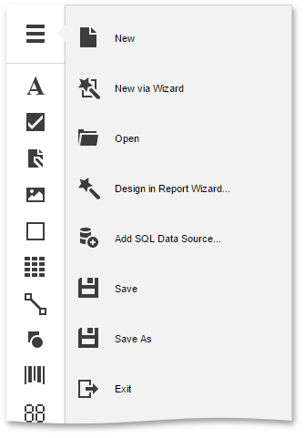

Menu
The Web Report Designer menu is invoked by clicking the menu button in the upper-left corner of the designer's user interface.

The menu contains the following commands.
| Command | Icon | Description |
|---|---|---|
| New | Creates a report and opens it in a new tab. | |
| New via Wizard | Invokes the Report Wizard to create a new report and generate the report layout. | |
| Open | Invokes the Open Report dialog to retrieve a report from the server-sider report storage and open it in a new tab. | |
| Design in Report Wizard |  |
Invokes the Report Wizard to edit the current report and generate the report layout. |
| Add SQL Data Source |  |
Invokes the SQL Data Source Wizard to create a new data source and configure it. |
| Save | Saves the current report to the report storage. | |
| Save As | Invokes the Save Report dialog to save the current report to the report storage under a new URL. | |
| Exit | Closes the Web Report Designer. |